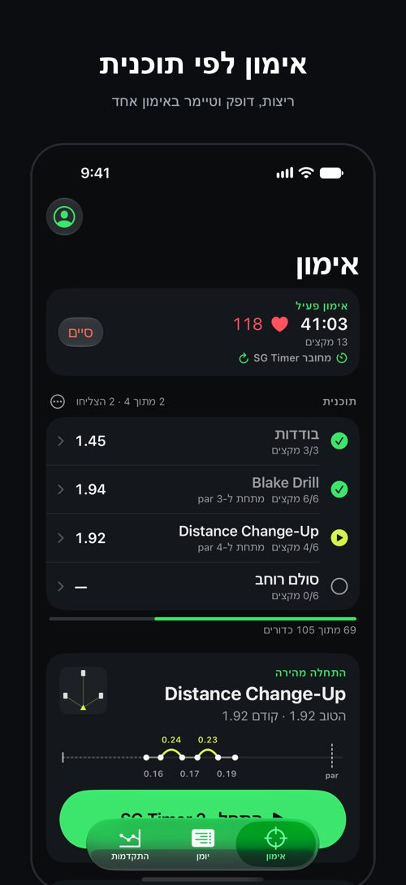
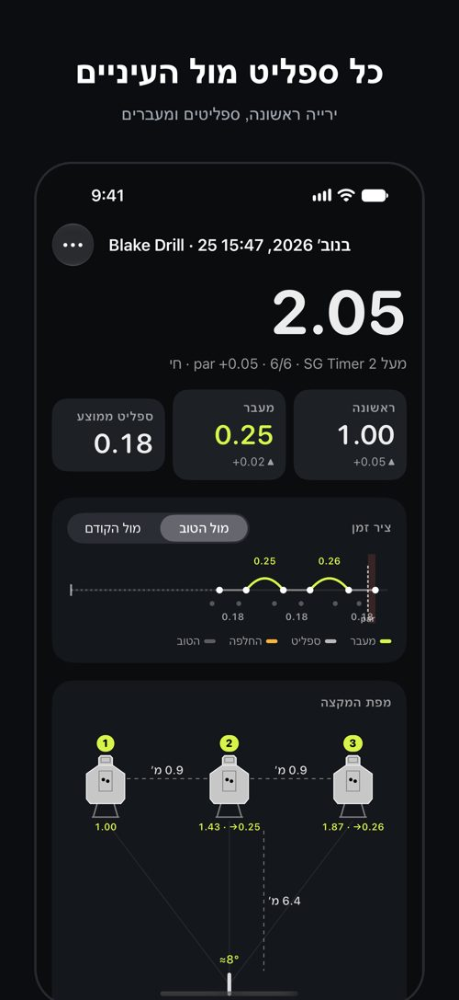
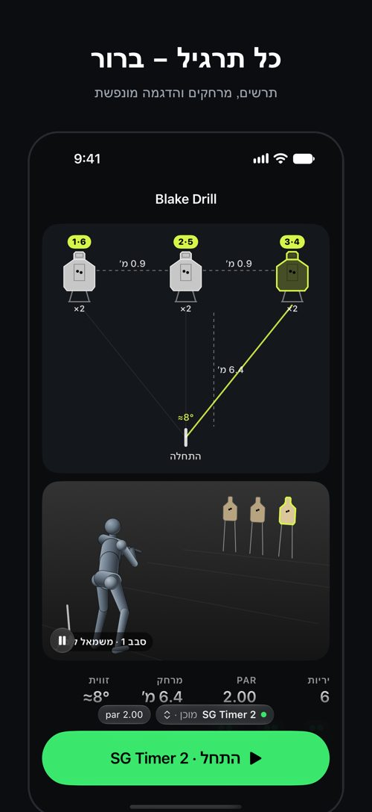
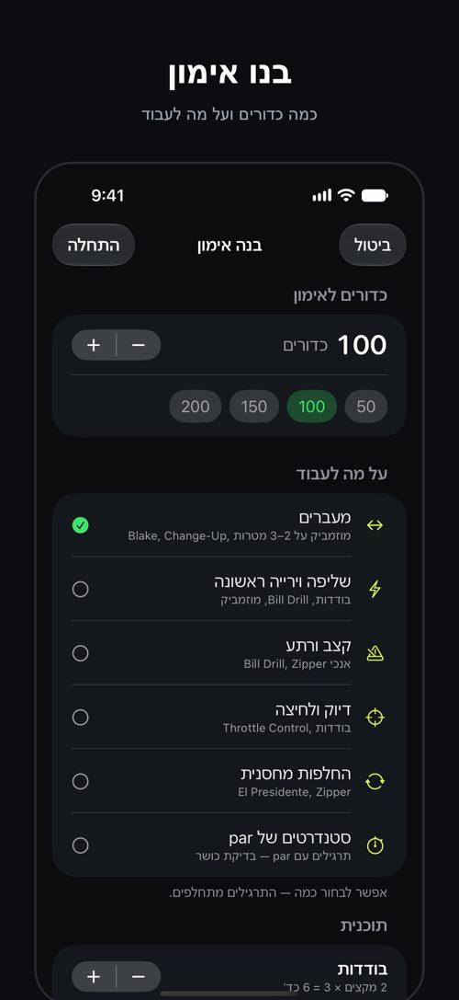
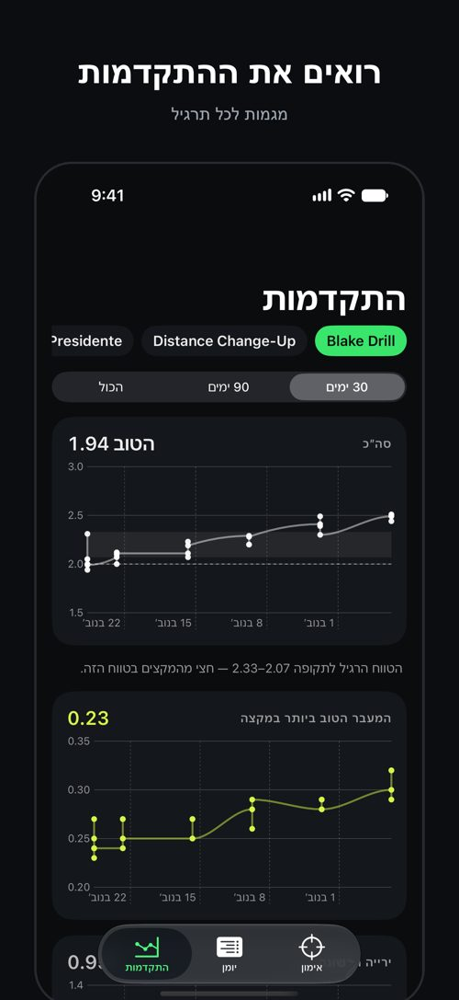

Shooter Ready: Drill Training
טיימר תרגילים ויומן אימונים לירי ספורטיבי — ל־iPhone ול־Apple Watch.





מה האפליקציה עושה
כל ספליט וכל מעבר
זמני היריות מתפרקים לירייה ראשונה, ספליטים, מעברים בין מטרות והחלפות מחסנית.
שלוש דרכים לקבל זמנים
בזמן אמת מ־SG Timer 2 ב־Bluetooth, טיימר הטלפון עם אות התחלה ו־par, או הזנה ידנית.
אימונים
כל הריצות של יום במטווח באימון אחד, יחד עם הדופק מ־Apple Watch.
בונה אימונים
הזינו כמה כדורים ועל מה לעבוד — וקבלו תוכנית מספריית התרגילים.
Apple Watch
התחלה ועצירה מהיד, זמן חי, תוכנית ודופק.
התקדמות
יומן של כל הריצות, הטוב והממוצע לכל תרגיל, מגמות לאורך זמן.
פרטיות
ללא חשבון, ללא פרסומות וללא מעקב. הנתונים נשארים ב־iPhone וב־Apple Watch שלכם.
Shooter Ready היא יומן אימונים וטיימר. הקפידו תמיד על כללי הבטיחות בנשק ועל כללי המטווח. SG Timer הוא סימן מסחר של Shooters Global; האפליקציה אינה קשורה ל־Shooters Global, ל־IPSC או ל־IDPA.